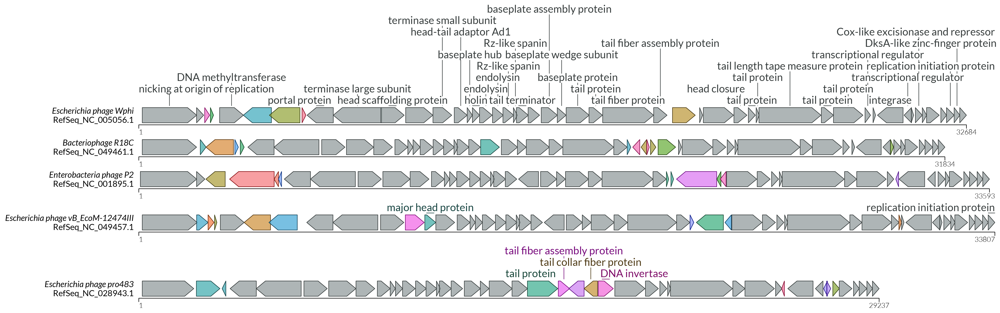

Example-driven guide
Here we show several usage examples of the lovis4u command-line interface. Along this guide we will show step-by-step how you can optimise your visualisation starting from default parameters.
Before start: The necessary sample data as well as adjustable tool' configuration files are provided by lovis4u at the post-install step:
lovis4u --data which copies lovis4u_data folder to your working directory.
If you work on a Linux machine after installation you should run: uorf4u --linux
This command replaces the tools paths (MMseqs2) in the pre-made config files from the MacOS version (default) to the Linux.
For demonstration we will use pharokka generated gff files with sequences of 5 Enterobacteria phages. Gff files are stored at: lovis4u_data/guide/gff
Default parameters run
Let's start with default parameter run. The only mandatory argument is a folder path containing pharokka generated gff (-gff) files or genbank files (-gb).
lovis4u -gff lovis4u_data/guide/gff
As results of running this command an output folder named lovis4u_{current_date} (e.g. lovis4u_2024_04_28-16_36) will be created. Name of the output folder can be changed with -o <output_folder_name>.
Output folder structure:
- lovis4u.pdf - vector graphic output (file name can be changed with --pdf-name <filename> parameter)
- loci_annotation_table.tsv - table containing annotation (sequence_id, length, coordinates, etc..) for each locus.
- features_annotation_table.tsv - table containing annotation (feature_id, locus_id, coordinates, etc..) for each feature (e.g. CDS)
- mmseqs (folder)
- DB folder with mmseqs' databases.
- mmmseqs_clustering.tsv - table with proteome clustering results.
- mmmseqs_(stdout/stderr).txt - mmseqs logs.
- input_proteins.fa - fasta file with all anntated protein sequences (input to mmseqs).
- proteome_similarity_matrix.tsv - pairwise proteome similarity scores indicating fraction of shared proteins homologues.
Visualisation results

As you can see